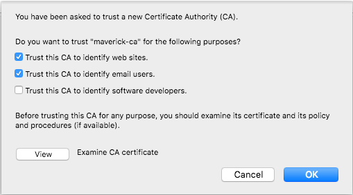
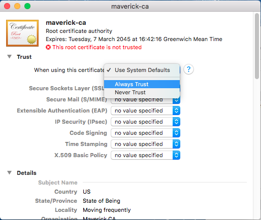
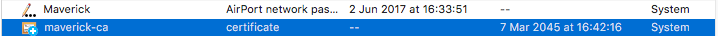
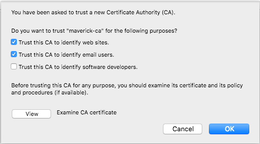
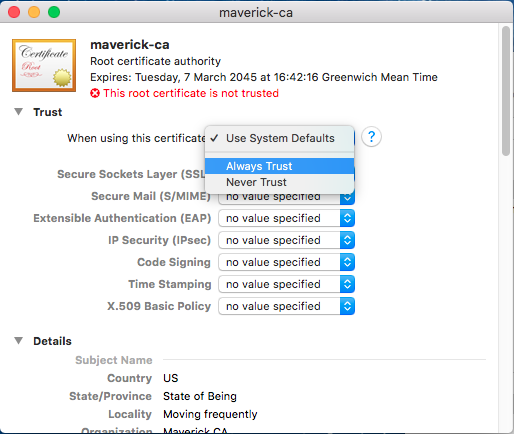
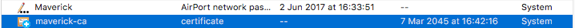

WARNING: You are viewing an unencrypted webpage.
This website uses technologies that only work over an encrypted link (https).
Success: You are viewing this page through an encrypted link (https).
If you do not have a green padlock in the URL bar, please follow the instructions below to install the correct CA certificate.
Maverick typically uses local domain/hostnames for access (eg. maverick-raspberry.local). Because of this, it is not possible to obtain public signed SSL certificates by recognised Certificate Authorities.
In order to facilitate encrypted communications, Maverick automatically generates cryptography certificates for this computer. To use them, you must download the CA (Certificate Authority) certificate and install it into your browser or OS so it recognises the Maverick certificates.
Download Maverick CA Certificate
Installation Instructions
Firefox
When you click on the Download link above, Firefox should automatically recognise the certificate and ask you to install it.
Choose the top two 'Trust' tickboxes - do NOT choose the third option for software developers, then click OK.

MacOS Chrome/Safari
On MacOS when using Chrome or Safari browsers, clicking the Download link above downloads the CA certificate typically to your Downloads folder.
Find it in the Finder and double click on it, and should import the certificate using Keychain Access.
Find the 'maverick-ca' certifcate in the 'Certificates' list, and double click on it, then expand the 'Trust' section.
Change the top option to 'Always Trust', and it should fill all the below options with 'Always Trust'.

Close the window, and in the certificate list it should now have a blue plus sign beside it. This signifies Trusted certificate.

In order to facilitate encrypted communications, Maverick automatically generates cryptography certificates for this computer. To use them, you must download the CA (Certificate Authority) certificate and install it into your browser or OS so it recognises the Maverick certificates.
Download Maverick CA Certificate
Installation Instructions
Firefox
When you click on the Download link above, Firefox should automatically recognise the certificate and ask you to install it.
Choose the top two 'Trust' tickboxes - do NOT choose the third option for software developers, then click OK.

MacOS Chrome/Safari
On MacOS when using Chrome or Safari browsers, clicking the Download link above downloads the CA certificate typically to your Downloads folder.
Find it in the Finder and double click on it, and should import the certificate using Keychain Access.
Find the 'maverick-ca' certifcate in the 'Certificates' list, and double click on it, then expand the 'Trust' section.
Change the top option to 'Always Trust', and it should fill all the below options with 'Always Trust'.

Close the window, and in the certificate list it should now have a blue plus sign beside it. This signifies Trusted certificate.
